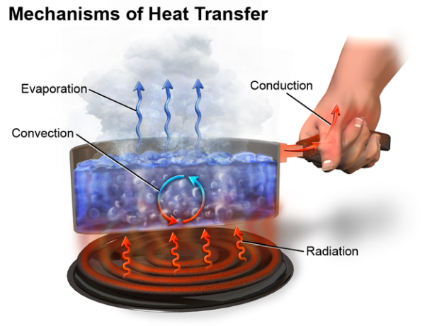

06 Energy Relationships in Chemical Reactions

1. Energy
Energy is the capacity to do work.
- Radiant energy comes from the sun and is earth’s primary energy source.
- Thermal energy is the energy associated with the random motion of atoms and molecules.
- Chemical energy is the energy stored within the bonds of chemical substances.
- Nuclear energy is the energy stored within the collection of neutrons and protons in the atom.
- Potential energy is the energy available by virtue of an object’s position
- Kinetic energy is the energy that a body possesses by virtue of being in motion.
Energy Changes in Chemical Reactions
Heat is the transfer of thermal energy between two bodies that are at different temperatures.
Thermochemistry is the study of heat change in chemical reactions.
System is the specific part of the universe that is of interest to us.
The surroundings are the rest of the universe outside the system.
There are three types of systems.
- An open system can exchange mass and energy, usually in the form of heat, with its surroundings.
- A closed system allows the transfer of energy (heat) but not mass.
- An isolated system does not allow the transfer of either mass or energy,
An exothermic process is any process that gives off heat—that is, transfers thermal energy to the surroundings.
An endothermic process requires heat to be supplied to the system (that is, to HgO) by the surroundings.
Thermodynamics
Thermodynamics is the scientific study of the interconversion of heat and other kinds of energy.
State functions are properties that are determined by the state of the system, regardless of how that condition was achieved.
First law of thermodynamics – energy can be converted from one form to another, but cannot be created or destroyed.
\[\Delta U = q +w\]
\(\Delta U\) is the change in internal energy of a system.
\(q\) is the heat exchange between the system and the surroundings.
\(w\) is the work done on (or by) the system.
when a gas expands against a constant external pressure \[w = -P\Delta V\]
Sign conventions for work and heat.
Example: A gas is compressed in a cylinder. The work done to the gas is 679 J. The heat transfer to the surroundings is 185 J. Calculate the internal energy change of the gas.
Answer:
\[\begin{align*}
\Delta U & = q + w \\
& = -185\,\text{J} + 679\,\text{J} \\
& = 494\,\text{J}
\end{align*}\]
Requirements
- Understand the concepts
- Learn how to calculate word done by a system.
2. Enthalphy
Enthalpy (\(H\)) is used to quantify the heat flow into or out of a system in a process that occurs at constant pressure.
\[H = U + PV\]
System absorbs heat \(\ce{->}\) Endothermic \(\ce{->}\) \(\Delta H > 0\)
System gives off heat \(\ce{->}\) Exothermic \(\ce{->}\) \(\Delta H < 0\)
The enthalpy change of a reaction:
- The stoichiometric coefficients always refer to the number of moles of a substance.
- If you reverse a reaction, the sign of \(\Delta H\) changes.
- If you multiply both sides of the equation by a factor \(n\), then \(\Delta H\) must change by the same factor \(n\).
- The physical states of all reactants and products must be specified in thermochemical equations.
Example: In the following reaction
\[\ce{2SO2(g) + O2(g) -> 2SO3(g)}\qquad \Delta H = -198.2\,\text{kJ/mol}\]
calculate the heat evolved when 87.9 g of \(\ce{SO2}\) (molar mass = 64.07 g/mol) is converted to \(\ce{SO3}\).
Answer:
The coefficient before \(\ce{SO2}\) is 2 which means the comsumption of each 2 mol of \(\ce{SO2}\) corresponds to an enthalpy change of -198.2 kJ. The negtive sign means the reaction releases energy to the enviorenment.
Thus the enthalpy change for this reaction is given by
\[\Delta H = 87.9\,\text{g}\,\ce{SO2}\times\frac{1\,\text{mol}\,\ce{SO2}}{64.07\,\text{g}\,\ce{SO2}}\times\frac{-198.2\,\text{kJ}}{2\,\text{mol}\,\ce{SO2}}=-136\,\text{kJ}\]
Correlation between \(\Delta H\) and \(\Delta U\)
\[\Delta U = \Delta H - P\Delta V\]
For gas under constant temperature
\[\Delta U = \Delta H - \Delta nRT\]
Example: Calculate the change in internal energy in the following reaction when 2 moles of \(\ce{CO}\) are reacted at \(25\,^\circ\text{C}\)
\[\ce{2CO(g) + O2(g) -> 2CO2(g)}\quad\Delta H = -566.0\,\text{kJ/mol}\] Answer:
\[\begin{align*}
\Delta U = & \Delta H -RT\Delta n \\
= & -566.0\,\text{kJ/mol} \\
& -(8.314\,\text{J/K mol})\times\frac{1\,\text{kJ}}{1000\,\text{J}}\times (298\,\text{K})\times (2-1-2) \\
= & -563.5\,\text{kJ/mol}
\end{align*}\]
Requirements
- Understand what is enthalpy.
- Learn how to calculate the enthalpy of a reaction.
3. Calorimetry
The specific heat (\(s\)) of a substance is the amount of heat (\(q\)) required to raise the temperature of one gram of the substance by one degree Celsius.
The heat capacity (\(C\)) of a substance is the amount of heat (\(q\)) required to raise the temperature of a given quantity (\(m\)) of the substance by one degree Celsius.
\[C = m\times s\]
\[q= C\times\Delta T = m\times s\times\Delta T\]
\[\Delta T = T_{final} - T_{initial}\]
Constant-Volume Calorimetry
\[q_{rxn} = -(q_{water}+q_{bomb}) = \Delta U_{rxn}\]
Constant-Pressure Calorimetry
\[q_{rxn} = -(q_{water}+q_{cal}) = \Delta H_{rxn}\]
Example: A 360.0-g piece of rebar (a steel rod used for reinforcing concrete) is dropped into 425 mL of water at 24.0 °C. The final temperature of the water was measured as 42.7 °C. Calculate the initial temperature of the piece of rebar. Assume the specific heat of steel is 0.449J/g °C.
Answer:
\[\begin{align*} & c_\text{rebar}\times m_\text{rebar}\times (T_\text{f,rebar} − T_\text{i,rebar}) \\ = & −c_\text{water}\times m_\text{water}\times(T_\text{f,water} − T_\text{i,water}) \end{align*}\]
\[\begin{align*} & 0.449\,\text{J/g}^\circ\text{C}\times 360.0\,\text{g}\times (42.7\,^\circ\text{C} − T_\text{i,rebar}) \\ = & − 4.184\,\text{J/g}^\circ\text{C}\times 425\,\text{g}\times (42.7\,^\circ\text{C} − 24.0\,^\circ\text{C}) \end{align*}\] \[T_\text{i,rebar}= 248\,^\circ\text{C}\]
Example: (Bomb Calorimetry) When 3.12 g of glucose, \(\ce{C6H12O6}\), is burned in a bomb calorimeter, the temperature of the calorimeter increases from 23.8 °C to 35.6 °C. The calorimeter contains 775 g of water, and the bomb itself has a heat capacity of 893 J/°C. How much heat was produced by the combustion of the glucose sample?
Answer:
\[\begin{align*} q_\text{rxn} = & −(q_\text{water} + q_\text{bomb}) \\ = & − 4.184\,\text{J/g}^\circ\text{C}\times 775\,\text{g}\times(35.6\,^\circ\text{C} − 23.8\,^\circ\text{C}) \\ & + 893\,\text{J/}^\circ\text{C}\times(35.6\,^\circ\text{C}−23.8\,^\circ\text{C}) \\ = & − (38,300\,\text{J}+10,500\,\text{J}) \\ = & − 48,800\,\text{J} \\ = & − 48.8\,\text{kJ} \end{align*}\]
Example: (Constant-Pressure Calorimetry) When 50.0 mL of 1.00 M HCl(aq) and 50.0 mL of 1.00 M NaOH(aq), both at 22.0 °C, are added to a coffee cup calorimeter, the temperature of the mixture reaches a maximum of 28.9 °C. What is the approximate amount of heat produced by this reaction? Assume the specific heat of the reaction mixture is the same as that of water, which is 4.184 J/g °C. The density of the reaction mixture is 1.00 g/mL.
\[\ce{HCl(aq) + NaOH(aq)->NaCl(aq) + H2O(l)}\]
Answer:
The total volume of the reaction solution is 50.0 mL + 50.0 mL = 100.0 mL. The mass is 100.0 g.
\[\begin{align*} q_\text{reaction} & = q_\text{solution} \\ & = 4.184\,\text{J/g}^\circ\text{C}\times 100.0\,\text{g}\times(28.9\,^\circ\text{C}−22.0\,^\circ\text{C}) \\ & = 2.89\times10^3\,\text{J} \end{align*}\]
Requirements
- Understand specific heat and heat capacity.
- Understand how to measure the reaction heat under constant volume or constant pressure.
4. Standard Enthalpy
Standard enthalpy of formation (\(\Delta H_\text{f}^\text{o}\)) is the heat change that results when one mole of a compound is formed from its elements at a pressure of 1 atm.
The standard enthalpy of formation of any element in its most stable form is zero. For some common compounds, see Table 6.4.
The standard enthalpy of reaction (\(\Delta H_\text{rxn}^\text{o}\)) is the enthalpy of a reaction carried out at 1 atm.
Hess’s Law: When reactants are converted to products, the change in enthalpy is the same whether the reaction takes place in one step or in a series of steps.
In other words, if reaction 1 add reaction 2 give you reaction 3, the \(\Delta H_\text{rxn}^\text{o}\) of reaction 3 would be the same as the sum of the \(\Delta H_\text{rxn}^\text{o}\) of reaction 1 and 2.
For example
\[\ce{A + B -> C + D}\qquad\Delta H _\text{rxn}^\text{o}(1)\] \[\ce{C + B -> E}\qquad\Delta H _\text{rxn}^\text{o}(2)\] \[\ce{A + 2B -> D + E}\qquad\Delta H_\text{rxn}^\text{o}(3)\]
We have
\[\Delta H _\text{rxn}^o(1) + \Delta H _\text{rxn}^\text{o}(2) = \Delta H _\text{rxn}^\text{o}(3)\]
For a reaction
\[\ce{aA + bB -> cC + dD}\]
The standard enthalpy of reaction can be calculated based on the standard enthalpy of formation of all reactants and products.
\[\Delta H_\text{rxn}^\text{o} = [\text{c}\Delta H_\text{f}^\text{o}(\ce{C}) + \text{d}\Delta H_\text{f}^\text{o}(\ce{D})] - [\text{a}\Delta H_\text{f}^\text{o}(\ce{A}) + \text{b}\Delta H_\text{f}^\text{o}(\ce{B})]\]
or
\[\Delta H_\text{rxn}^\text{o} = \sum n\Delta H_\text{f}^\text{o}(\text{products}) - \sum m\Delta H_\text{f}^\text{o}(\text{reactants})\]
So, you do not need to measure the enthalpy of every chemical reaction, you can simply calculate from known standard enthalpy of formation of the reactants and products.
Example: Given the thermochemical equation for the reaction of sucrose with \(\ce{KClO3}\):
\[\begin{align*} \ce{& C12H22O11(aq) + 8KClO3(aq) \\ & -> 12CO2(g) + 11H2O(l) + 8KCl(aq)} \\ & \Delta H_\text{rxn}^\text{o} = −5960\,\text{kJ/mol} \end{align*}\]
How much heat will be released when 2.67 g sucrose is reacted?
Answer:
The thermochemical equation tells the reaction of each one mole sucrose releases 5960 kJ heat. The question is how many moles sucrose there are in 2.67 g.
\[2.67\,\text{g}\times\frac{1\,\text{mol}}{342.3\,\text{g}}=0.00780\,\text{mol}\]
\[0.00780\,\text{mol}\times (-5960\,\text{kJ/mol}) = -46.5\,\text{kJ} \]
Thus, 46.5 kJ heat will be released when 2.67 g sucrose is reacted.
Example: Determine the enthalpy of formation, \(\Delta H_\text{f}^\text{o}\), of \(\ce{FeCl3(s)}\) from the enthalpy changes of the following two-step process that occurs under standard state conditions:
\[\ce{Fe(s) + Cl2(g) -> FeCl2(s)}\quad\Delta H^\text{o}_1 = − 341.8\,\text{kJ}\quad(1)\]
\[\ce{2FeCl2(s) + Cl2(g) -> 2FeCl3(s)}\quad\Delta H^\text{o}_2 = − 115.4\,\text{kJ}\quad(2)\]
Answer:
The reaction for the formation of \(\ce{FeCl3}\) is \[\ce{Fe + \frac{3}{2}Cl2 -> FeCl3}\qquad\Delta H_\text{f}^\text{o}\quad(3)\]
Reaction (3) is the sum of reaction (1) and 1/2 reaction (2), thus
\[\begin{align*} & \Delta H_\text{f}^\text{o} \\ = & \Delta H^\text{o}_1 + \frac{1}{2}\times\Delta H^\text{o}_2 \\ = & 341.8\,\text{kJ} + \frac{1}{2}\times 115.4\,\text{kJ} \\ = & 399.5\,\text{kJ} \end{align*}\]
Example: (a) Calculate the reaction enthalpy based on the standard formation enthalpies of the reactants and products.
\[\ce{2Al(s) + Fe2O3(s) -> Al2O3(s) + 2Fe(l)}\]
- How much heat will be absorbed or released when 35.0 g Al is reacted?
Answer:
(a) \[\begin{align*}
& \Delta H_\text{rxn}^\text{o} \\
= & [\Delta H_\text{f}^\text{o}(\ce{Al2O3}) + 2\Delta H_\text{f}^\text{o}(\ce{Fe})] - [2\Delta H_\text{f}^\text{o}(\ce{Al}) + \Delta H_\text{f}^\text{o}(\ce{Fe2O3})] \\
= & [-1669.8\,\text{kJ/mol} + 2\times 12.40\,\text{kJ/mol}] - [2\times 0 + (-822.2\,\text{kJ/mol})] \\
= & -822.8\,\text{kJ/mol}
\end{align*}\]
- According to the thermochemical equation, the reaction of each 2 mol Al would release 822.8 kJ heat. How many moles of Al are there in 35.0 g?
\[35.0\,\text{g Al}\times\frac{1\,\text{mol Al}}{27.0\,\text{g Al}} = 1.30\,\text{mol Al}\]
\[q = -822.8\,\text{kJ}\times\frac{1.30\,\text{mol Al}}{2\,\text{mol Al}} = -535\,\text{kJ}\]
Thus, 535 kJ heat will be released when 35.0 g Al is reacted.
Requirements
- Understand standard enthalpy of formation and standard enthalpy of reaction.
- Learn how to calculate reaction enthalpy from standard enthalpy of formation.
Practice Questions
- Heat is
- a measure of temperature.
- a measure of thermal energy transferred between two bodies at different temperature.
- a measure of the change in temperature.
- the energy stored within the structural units of chemical substances.
- the energy due to the movement of an object.
Answer: B
- Which of the following is not a state function?
- Internal energy
- Heat
- Enthalpy
- Temperature
- Pressure
Answer: B
- An exothermic reaction causes the surroundings to
- warm up
- become acidic
- expand
- decrease in temperature
- release \(\ce{CO2}\)
Answer: A
- Which of the following processes is exothermic?
- \(\ce{2H2O(g) -> 2H2(g) + O2 (g)}\)
- \(\ce{H2O(l) -> H2O(g)}\)
- \(\ce{3O2(g) + 2CH3OH(g) -> 2CO2(g) + 2H2O(g)}\)
- \(\ce{H2O(s) -> H2O(l)}\)
- \(\ce{MgCl2(s) -> Mg (g) + Cl2(g)}\)
Answer: C
- Which of the following processes always results in an increase in the internal energy of a system?
- The system gains heat and has work done on it by the surroundings.
- The system loses heat and does work on the surroundings.
- The system gains heat and does work on the surroundings.
- The system loses heat and has work done on it by the surroundings.
- None of these is always true.
Answer: A
How much heat is required to raise the temperature of 2500 g of water from \(27.0\) \(^\circ\text{C}\) to \(72.0\) \(^\circ\text{C}\)? The specific heat of water is 4.184 J/g\(\cdot^\circ\text{C}\).
Answer: \(4.71\times10^{5}\) JThe specific heat of Al is 0.900 J/g\(\cdot^\circ\text{C}\). What is the molar heat capacity of Al? (The heat capacity of one mole of Al)
Answer: 24.3 J/molGiven the thermochemical equation \[\ce{2H2(g) + O2(g) -> 2H2O(l)}\quad\Delta_\text{rxn}H^\text{o} = -484\,\text{kJ/mol}\] What is the transfer of heat that occurs when 2.93 mol \(\ce{H2}\) reacts?
Answer: 709 kJ releaseGiven the thermochemical equation \[\begin{align*} & \ce{2Al(s) + (3/2)O2(g) -> Al2O3(s)}\\ & \Delta_\text{rxn}H^\text{o} = -1670\,\text{kJ/mol} \end{align*}\] What is the reaction enthalpy for \[\ce{2Al2O3(s) -> 4Al(s) + 3O2(g)}\]
Answer: 3340 kJ/molGiven the thermochemical equation \[\ce{2SO2 + O2 -> 2SO3}\qquad\Delta_\text{rxn}H^\text{o} = -198\,\text{kJ/mol}\] What is the standard formation enthalpy of \(\ce{SO3}\). (Knowing the standard formation enthalpy of \(\ce{SO2(g)}\) it is -296.8 kJ/mol)
Answer: -396 kJ/molConsidering the following reaction \[\begin{align*} & \ce{2CuS(s) + 3O2(g) -> 2CuO(s) + 2SO2(g)}\\ & \Delta_\text{rxn}H^\text{o} = -805.6\,\text{kJ/mol} \end{align*}\]
How much heat is converted per gram \(\ce{CuS}\) reacted?
Knowing the standard formation enthalpy of \(\ce{CuO(s)}\) is -157.3 kJ/mol, and for \(\ce{SO2(g)}\) it is -296.8 kJ/mol, calculate the standard formation enthalpy of \(\ce{CuS(s)}\).
In one reaction, 156 mL \(\ce{SO2}\) was collected from the reaction at 25 \(^\circ\text{C}\) under 754 mmHg pressure. How many grams of \(\ce{SO2}\) was collected?
Answer: (a) -4.21 kJ; (b) -51.3 kJ/mol; (c) 0.405 g.
Copyright
Copyright(C) 2022 Yu Wang

This work is licensed under a Creative Commons Attribution 4.0 International License.